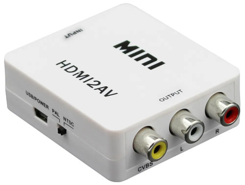
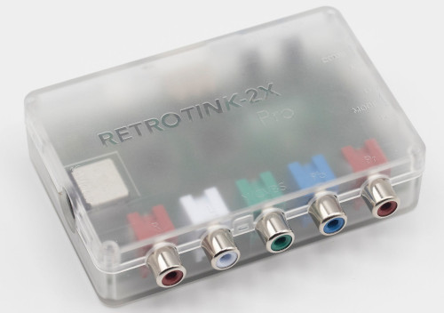
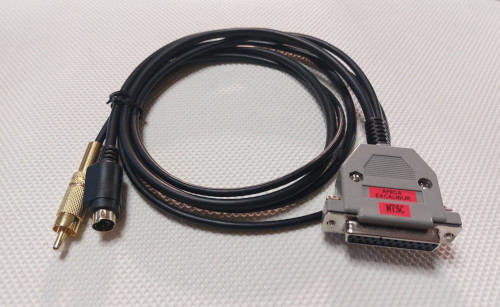
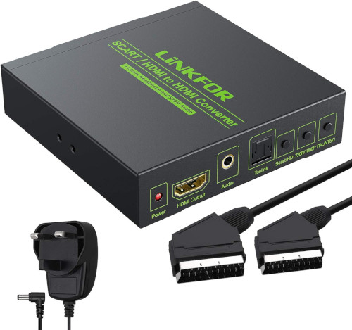
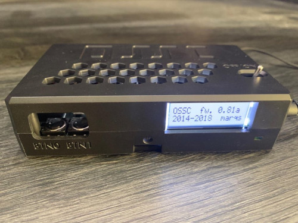
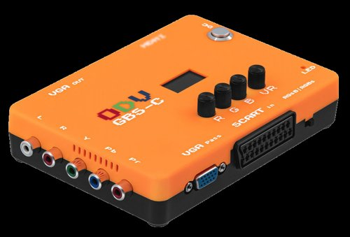
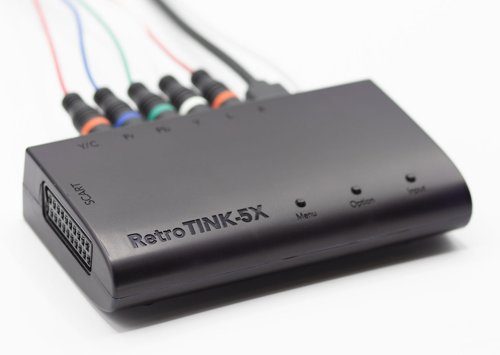
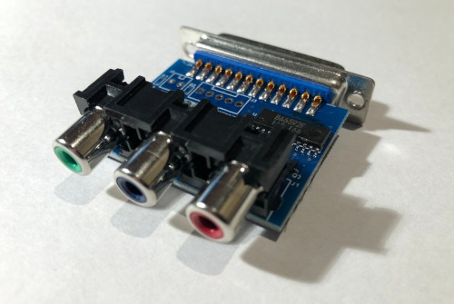
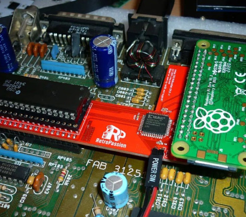

The Solana Vanishing Act
The Solana Vanishing Act
I got the urge to connect my Amiga 500 to our living room TV, with the goal of playing games together with my family from the couch. The problem is however, that our flat screen TV is fairly new and has only HDMI inputs.
Lack of connectivity is only part of the problem. Another issue is the supported resolutions. Most Amiga software uses either PAL/NTSC lowres or hires-interlaced resolutions and most modern TVs can't display these correctly, without conversion and processing. Even those that can handle 240p, often interpret it as 480i.
The Amiga 500 has a Composite out RCA jack (called Mono), which outputs a Black & White signal, and a Video
port with a DB23 connector with an RGB signal. There are a number of ways to turn these into something an HDMI
TV (or monitor) can handle, but most boil down to two things:
1. An upscaler/HDMI converter device
2. A way of making the connection between the upscaler and the Amiga, so some sort of cable or adaptor+cable
There are also a number of aspects to consider, including picture quality, latency and of course cost. In general we can say that the quality of the analog video standards goes like this: Component and RGB is the best, S-Video is good, Composite is fine on CRTs, but poor on flat screens and RF is the worst with lots of interference in today's electrically crowded world. Regarding latency, cheap Chinese upscalers (found on Amazon and eBay) will add significantly more lag than the more expensive and quality upscalers made with retro gaming in mind. Does that mean that a cheaper solution is necessarily bad and should be avoided? No, just know your needs as you'll get what you pay for.
The three biggest names in the retro-gaming scene are RetroTINK, OSSC and Framemeister. I'm dismissing the latter here due to it's inavailability, high price and the fact that the OSSC pretty much made it obsolete, and will focus on the first two and some other less known options.
The RetroTINK is made by Mike Chi and it's based on his proprietary design and firmware. There is a Chinese clone on the market called RetroScaler2X, which is a ripoff of the first RetroTINK 2X (not the Pro), before the firmware was encrypted. Even though it's cheaper than the original, I would advice against supporting this way of making business. I'm also excluding the previous official RetroTINK products like the SCART and Mini, which are out of stock due to supply shortage and will probably be discontinued, so you can only buy them on the second hand market.
The OSSC stands for Open Source Scan Converter, which is an open source design and several companies make assembled end-user products from it, including VideoGamePerfection, Mcbazel, Keico and Bitfunx. VideoGamePerfection is the "definitive" one, which uses the latest design and updates, the others being a bit behind (and sometimes being cheaper). Mcbazel (among other manufacturers) also makes an upscaler called ODV-GBS-C, which is based on the open source project of GBS-Control. It's an updated and enhanced design of the Tvia Trueview5725 based upscalers used in arcade machines, with more connectivity options and a new custom Firmware.
Note: The indicated price ranges are just approximate and at the time of writing this. VAT, customs and shipping can affect them significantly based on your location.
A520 TV modulator + AV2HDMI adapter
The original Commodore TV modulator creates an RF and a Composite output. Most modern TVs still have an
RF/antenna input, but it's most probably not even worth to try. The composite signal can be converted to HDMI
with a cheap AV2HDMI adaptor from Amazon like this
one.
If you already have an A520 TV modulator, this is the cheapest solution. But will result in the worst possible
picture quality, where the text is barely readable and as these adaptors were made with VHS/DVD in mind, they
also have a pretty significant lag, which can be annoying in games where precision is required.
Note: It's possible to modify the A520 modulator to output an S-Video signal, see below.
Price range: 10 USD (and an additional 20-30 USD if you need to buy a used A520)

RGB to S-Video adapter + S-Video input on an upscaler (RetroTINK 2x-Pro)
The RetroTINK 2x-Pro is an upscaler made
with retro gaming in mind. It works out of the box and doesn't require configuration. It has Composite,
Component and S-Video inputs. With S-Video we can get a decent quality output and there are several ways to get
this signal out of the Amiga 500. We can either mod an existing A520 TV
modulator, build our own S-Video adapter based on this or this guide, or buy a
ready-made internal module here or here.
The solution with the S-Video and Composite output module however, requires some soldering and a hole drilled in
the Amiga 500's case.

Another option is a ready-made adapter cable called Amiga Excalibur here or here, which
has the adapter built into it's DB23 connector. This cable comes in different variations, there is a 2-in-1
version too, that will give you both an S-Video and Composite output. There are different cables for PAL or NTSC
TVs, so you need to pick one for your system.
Price Range: 180 USD (cable 40, RetroTINK 2x-Pro 140)

RGB-SCART cable + a cheap SCART/RGB to HDMI converter
A cost effective solution with a decent picture quality as it's using the RGB signal, but expect some added lag
by the cheap converter. It's not perfect for gaming where timing is critical, but if you want to connect only
your Amiga (or other systems with an RGB output), this is probably the most simple and best value for money
solution you can find.
You can make your own SCART cable based on this
guide or buy a ready-made
cable.
Note 1: Some online stores sell cables with a modified DB25 connector, the one above uses an original
DB23 connector.
Note 2: A SCART connector can be used to transmit either a Composite or an RGB signal. There are many
SCART to HDMI converters out there, but not all of them work with an RGB signal. Here
is one that should work.
Price Range: 55 USD (cable 25, converter 30)

RGB-SCART cable + a quality upscaler (OSSC, ODV-GBS-C, RetroTINK 5X-Pro)
A nicer and better quality solution with no lag, but a higher price tag. The OSSC is a flexible
and extendable upscaler with an RGB/SCART and Component input and an upgradable firmware. It's also rather
complicated, with a wast amount of settings to play around with. But if you dig into it, you can surely find the
best present and options to make it look perfect on practically any screen and there are frequent updates to
it's firmware and features. It struggles however when switching resolutions due to it's design (preventing the
signal drop would require a frame rate conversion, which needs more buffer memory than the OSSC has). It takes a
few seconds to switch, which can be annoying if it happens during gameplay or a demo. Some Amiga games also
switch resolutions when displaying high-res title and loading screens, but it's even more annoying if you have
other retro systems too like the PS2, where it was common for developers to use 240p for the game and 480i for
the in-game menus.

The ODV-GBS-C is an upscaler specially designed for classic retro game consoles. It's based on a generic upscaler for arcade machines, with many improvements. It converts YPbPr component and RGB signals to HDMI and VGA. It's also lag free and supports dynamic de-interlacing, scanline effect and no delay for 240p/480i switching (unlike the OSSC). It can even downscale higher resolution inputs to 240p, for displaying them on a CRT. Mcbazel's model can be found on Amazon. If quick resolution switching and dynamic de-interlacing is an important factor for you, I recommend looking at this option, it's also significantly cheaper than OSSC. Note: As GBS-Control is an open-source project, you can also build a scaler on your own. There are even All-In-One kits available, which make this the cheapest quality solution for people who like soldering.

The RetroTINK 5x-Pro is considered to be the top of
the class by many in the retro gaming scene, and it's price is reflecting that. Currently sold at 325 USD makes
it the most expensive option. If you're in Europe, with the tax and shipping it will be closer to 400. For this
price however you get an FPGA based upscaler, a hassle-free plug and play solution that works with virtually
every possible analog input and can upscale to 1080p (as opposed the RetroTINK 2X models that can only double to
480p).
Price Range: 115-350 USD (cable 25, OSSC 150, ODV-GBS-C 90, RetroTINK 5X-Pro 325)

RGB to Component adapter + Component input on an upscaler (OSSC, ODV-CBS-C, RetroTINK 2X-Pro,
5X-Pro)
You can convert the Amiga's RGB output to Component with an external adapter, and use practially any quality
upscaler with it.
The signal on the Mono output it basically the Luma of the Component video, with CSYNC. It's possible to use the
Luma signal from the Mono jack and combine it with Pb and Pr signals we can get from the RGB port. There is no
ready made solution for this, but you can make your own adapter based on this guide.
Another way is to use only the RGB port to generate a Component output, you can build your own adapter based on
this project, or you can buy this nice and reasonably priced pre-built
adapter from a RetronicDesign, a Canadian manufacturer: here or
here.
Price Range: 180-400 USD (component adapter 40-50, RetroTINK/OSSC 140-150, ODV-GBS-C 90, RetroTINK 5X-Pro
325)

HDMI output with an internal Pi Zero adapter
This is an internal mod, adding an adapter to the Denise chip to hijack the video signal and convert it to HDMI
with a Pi Zero. Buy the adapter here or
another version here.
Note: You'll need to add a Pi Zero and an SD card with the appropriate software. Also, you have to ditch
the internal shielding for it to fit, and find a way to lead the cable out of the case, maybe through the side
expansion port (if you don't use it for something else). There is even an expansion
port cover with a cable access hole.
Price Range: 85 USD (adapter 40-50, Pi Zero 30, cover 10)
